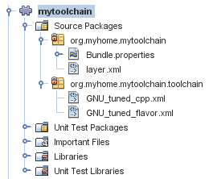

Apache NetBeans
Apache NetBeansLatest release
使用 C/C++ 工具集合描述符 - NetBeans IDE 教程
| This tutorial needs a review. You can open a JIRA issue, or edit it in GitHub following these contribution guidelines. |
撰稿人：_Alexander Simon_ 2014 年 3 月 [修订版本号：V8.0-1]

Figure 1. 此页上的内容适用于 NetBeans IDE 8.0
要学习本教程，您需要具备以下软件。
| 软件 | 要求的版本 |
|---|---|
NetBeans IDE（支持 C/C++） |
|
Java 开发工具包 (JDK) |
有关下载并安装所需软件的信息，请参见 NetBeans IDE 安装说明和配置 NetBeans IDE 以使用 C/C+/Fortran+。
简介
本教程说明了如何在 NetBeans IDE 8.0 中编辑现有工具集合或创建现有工具集合的定制版本。
显示的示例适用于 Oracle Solaris 和 Linux 的 GNU 工具集合，但概念也可以适用于 Windows 和 Mac。通过使用这些信息，您可以了解如何执行以下操作：
-
更改 IDE 用于编译 C/C++ 文件的默认编译器标志
-
添加 IDE 不支持的编译器
工具集合
工具集合包含在 IDE 中通过_工具集合描述符_指定的一组编译器、一个 make 实用程序和一个调试器。每次编译、生成或调试代码时，IDE 都会运行一个在工具集合描述符（项目配置为使用的工具集合的工具集合描述符）中描述的可执行文件。代码帮助功能使用从工具集合描述符中获取的包含路径和宏。
工具集合描述符是一个 XML 文件，位于文件夹 org/netbeans/modules/cnd/toolchain/resources/toolchaindefinition/ 的模块 IDE_HOME/cnd/modules/org-netbeans-modules-cnd-toolchain.jar 中。不应编辑这些原始 IDE 工具描述符 XML 文件。
本文向您介绍如何在您自己的 NetBeans 用户目录中创建可编辑的工具描述符重复项。IDE 随后将使用位于您的用户目录中的工具集合描述符中的信息而非原始版本。
社区提供的工具集合
NetBeans 社区中的用户提供了一些工具集合插件：
请注意，这些插件未正式受支持，在此处引用它们是为了能帮助您创建自己的插件。
Windows 用户也可能对 NetBeans 社区中的用户提供的文章感兴趣：用于 ARM 开发的 NetBeans 设置和 GNU Cross-Toolchain 配置。
编辑工具集合描述符
编辑工具集合描述符有些棘手，因为 NetBeans IDE 没有提供编辑描述符的 GUI。此部分描述如何生成工具集合描述符的重复“影子”副本，您可以编辑这些副本以更改 IDE 使用工具的方式。
-
退出 IDE（如果正在运行）。
-
编辑文件
IDE-HOME/etc/netbeans.conf，其中IDE-HOME是 NetBeans 安装目录。 -
将以下标志添加到
netbeans_default_options条目中：
-J-Dcnd.toolchain.personality.create_shadow=true-
启动 IDE，选择“工具”>“选项”，然后在“选项”窗口的顶部窗格中选择 "C/C++"。
IDE 将在 NetBeans 用户目录中创建包含工具集合描述符的“影子”版本的目录：
userdir
/config/CND/ToolChainNetBeans 用户目录的位置因操作系统不同而异。 userdir/config/CND/ToolChain 目录的一些可能位置包括：
-
Windows：
C:\Documents and Settings_username_\Application Data\NetBeans_version_\config\CND\ToolChain -
Mac：
/Users/username/Library/Application Support/NetBeans/version/config/CND/ToolChain -
Linux 和 Solaris：
/home/username/.netbeans/version/config/CND/ToolChain
创建的描述符列表应如下所示：
CLang.xml SunStudio.xml
CLang_mac.xml SunStudio_10.xml
CLang_solaris.xml SunStudio_11.xml
Cygwin.xml SunStudio_12.1_solaris-sparc.xml
Cygwin_4.x.xml SunStudio_12.1_solaris-x86_linux.xml
GNU.xml SunStudio_12.2_linuxCompatGNU.xml
GNU_mac.xml SunStudio_12.2_solaris-sparc.xml
GNU_solaris.xml SunStudio_12.2_solaris-x86_linux.xml
Intel.xml SunStudio_12.3_linuxCompatGNU.xml
Interix.xml SunStudio_12.3_solaris-sparc.xml
MinGW.xml SunStudio_12.3_solaris-x86_linux.xml
MinGW_TDM.xml SunStudio_12.xml
OSS_linuxCompatGNU.xml SunStudio_8.xml
OSS_solaris-sparc.xml SunStudio_9.xml
OSS_solaris-x86_linux.xml WinAVR.xml
OracleSolarisStudio.xml您可以编辑正在使用的 toolchain 的描述符。例如，如果您正在 Solaris 上使用 GNU，则编辑 GNU_solaris.xml 文件；如果您正在 Windows 上使用 MinGW，则应编辑 MinGW.xml 文件。
有关这些描述符 XML 文件中使用的标记的信息，请参见工具集合 XML 文件的详细信息。可以更改标记的值以更改 IDE 中工具的行为。
此目录中的描述符优先于 IDE-HOME 目录中的正式版本。您应删除用户目录中不希望 IDE 使用的工具描述符。
-
从
IDE-HOME/etc/netbeans.conf中删除-J-Dcnd.toolchain.personality.create_shadow=true标志，这样 IDE 就不会再次创建影子描述符。
-
完成更改后，重新启动 IDE 以使用修改后的工具描述符。
创建定制工具集合
此部分演示如何创建基于 GNU 工具集合的工具集合，并对编译器标志进行一些更改，以便于调试。此示例演示用于创建新 NetBeans 模块的步骤，该模块包含新工具集合，以使您能够共享该工具集合或者在 IDE 的其他实例中使用该工具集合。
有关创建 NetBeans 模块的一般信息，请参见 NetBeans 插件快速入门。
创建定制工具集合：
-
确保您的 NetBeans 安装包含 NetBeans 插件开发模块。
选择“工具”>“插件”，然后单击“已安装”标签。如果未安装 Netbeans 插件开发模块，请单击“可用插件”标签并安装该模块。可以在搜索框中键入“插件”以快速找到该插件。
-
选择“文件”>“新建项目”以创建新的 NetBeans 模块。在新建项目向导的“选择项目”页中，在向导的第一步中选择“NetBeans 模块”类别和“模块”项目。单击 "Next"（下一步）。
-
在“名称和位置”页中键入项目名称（如
mytoolchain），并将所有其他字段保持不变。单击 "Next"（下一步）。
-
在“基本模块配置”页上，键入
org.myhome.mytoolchain作为代码名称基，它定义用于标识创建的模块的唯一字符串。代码名称基也用作模块的主包。
-
请勿选中“生成 OSGi 包”复选框，因为您将使用默认 NetBeans 模块系统而不是 OSGi。
-
单击 "Finish"（完成）。IDE 将创建名为 mytoolchain 的新项目。
-
在“项目”标签中，右键单击 "mytoolchain" 项目节点并选择“新建”>“其他”。
-
在“新建文件”向导中，选择类别“模块开发”和文件类型“XML 层”，然后单击“下一步”并单击“完成”。
IDE 将在主包 org.myhome.mytoolchain 内部的“源包”节点下创建 layer.xml 并在编辑器中打开 layer.xml 。
-
如果此文件包含
<filesystem/>标记，请将其替换为开始和结束的filesystem标记：<filesystem>
``</filesystem>``-
复制以下文本并粘贴在
filesystem标记内部的layer.xml中：
<folder name="CND">
<folder name="Tool">
<file name="GNU_tuned_flavor" url="toolchain/GNU_tuned_flavor.xml">
<attr name="extends" stringvalue="GNU_flavor"/>
</file>
<file name="GNU_tuned_cpp" url="toolchain/GNU_tuned_cpp.xml">
<attr name="extends" stringvalue="GNU_cpp"/>
</file>
</folder>
<folder name="ToolChains">
<folder name="GNU_tuned">
<attr name="position" intvalue="5000"/>
<attr name="SystemFileSystem.localizingBundle" stringvalue="org.myhome.mytoolchain.Bundle"/>
<file name="flavor.shadow">
<attr name="originalFile" stringvalue="CND/Tool/GNU_tuned_flavor"/>
</file>
<file name="c.shadow">
<attr name="originalFile" stringvalue="CND/Tool/GNU_c"/>
</file>
<file name="cpp.shadow">
<attr name="originalFile" stringvalue="CND/Tool/GNU_tuned_cpp"/>
</file>
<file name="fortran.shadow">
<attr name="originalFile" stringvalue="CND/Tool/GNU_fortran"/>
</file>
<file name="assembler.shadow">
<attr name="originalFile" stringvalue="CND/Tool/GNU_assembler"/>
</file>
<file name="scanner.shadow">
<attr name="originalFile" stringvalue="CND/Tool/GNU_scanner"/>
</file>
<file name="linker.shadow">
<attr name="originalFile" stringvalue="CND/Tool/GNU_linker"/>
</file>
<file name="make.shadow">
<attr name="originalFile" stringvalue="CND/Tool/GNU_make"/>
</file>
<file name="debugger.shadow">
<attr name="originalFile" stringvalue="CND/Tool/GNU_debugger"/>
</file>
<file name="qmake.shadow">
<attr name="originalFile" stringvalue="CND/Tool/GNU_qmake"/>
</file>
<file name="cmake.shadow">
<attr name="originalFile" stringvalue="CND/Tool/GNU_cmake"/>
</file>
</folder>
</folder>
</folder>-
打开
Bundle.properties文件，并添加以下字符串：CND/ToolChains/GNU_tuned=My GNU Tuned Tool Collection
-
创建
toolchain子包：右键单击“源包”下的org.myhome.mytoolchain包，然后选择“新建”>“Java 包”。将默认包名newpackage替换为toolchain，然后单击“完成”。IDE 将创建org.myhome.mytoolchain.toolchain子包。
-
创建新文件：右键单击
org.myhome.mytoolchain.toolchain子包，然后选择“新建”>“空文件”。将文件命名为GNU_tuned_flavor.xml，然后单击“完成”。
如果您看不到“空文件”选项，请选择“其他”，然后在“新建文件”向导中选择类别“其他”和文件类型“空文件”，再单击“下一步”。
此文件是新工具集合的工具集合描述符。
-
复制以下文本并粘贴在
GNU_tuned_flavor.xml中：
<?xml version="1.0" encoding="UTF-8"?>
<toolchaindefinition xmlns="https://netbeans.org/ns/cnd-toolchain-definition/1">
<toolchain name="GNU_tuned_flavor" display="GNU_tuned" family="GNU" qmakespec="${os}-g++"/>
<platforms stringvalue="linux,sun_intel,sun_sparc"/>
</toolchaindefinition>-
创建另一个新文件：右键单击
org.myhome.mytoolchain.toolchain子包，然后选择“新建”>“空文件”。将文件命名为GNU_tuned_cpp.xml，然后单击“下一步”。
-
复制以下文本并粘贴在
GNU_tuned_cpp.xml中：
<?xml version="1.0" encoding="UTF-8"?>
<toolchaindefinition xmlns="https://netbeans.org/ns/cnd-toolchain-definition/1">
<cpp>
<compiler name="g++"/>
<development_mode>
<fast_build flags=""/>
<debug flags="-g3 -gdwarf-2" default="true"/>
<performance_debug flags="-g -O"/>
<test_coverage flags="-g"/>
<diagnosable_release flags="-g -O2"/>
<release flags="-O2"/>
<performance_release flags="-O3"/>
</development_mode>
</cpp>
</toolchaindefinition>注意，调试标志设置为 -g3 和 -gdwarf-2，这不同于默认 GNU 工具集合描述中设置的标志。
项目树应看起来类似于以下内容：

Figure 2. 项目树
单元测试文件夹可能不存在。
-
在“项目”窗口中，右键单击
mytoolchain项目节点并选择“运行主项目”。将构建该模块，并将其安装在 IDE（模块的默认目标平台）的新实例中。此时将打开目标平台，您可以在其中试用新模块。
-
在运行的模块中，选择“工具”>“选项”，从“选项”窗口的顶部窗格中选择 "C/C++"，然后选择“构建工具”标签。
-
如果未显示新工具集合 (GNU_tuned)，请单击“恢复默认值”。在提示重新扫描环境时，单击“是”继续。
IDE 将显示新的工具集合：

Figure 3.
-
选择“文件”>“新建项目”>“样例”> "C/C" > "Welcome" 以创建新的 C/C 样例项目
Welcome。
-
右键单击项目节点，然后选择 "Properties"（属性）。在“项目属性”对话框中，选择“构建”节点，将“工具集合”设置为 GNU_tuned 工具集合，然后单击“确定”。
-
构建项目。请注意，编译器具有
-g3 -gdwarf-2标志：
g++ -c -g3 -gdwarf-2 -MMD -MP -MF build/Debug/GNU_tuned-Solaris-x86/welcome.o.d -o build/Debug/GNU_tuned-Solaris-x86/welcome.o welcome.cc-
在“项目属性”对话框中，选择 GNU 工具集合，然后单击“确定”。
-
重新构建项目，并在输出窗口中比较编译行：
g++ -c -g -MMD -MP -MF build/Debug/GNU-Solaris-x86/welcome.o.d -o build/Debug/GNU-Solaris-x86/welcome.o welcome.cc您应该能够看到 GNU_tuned 工具集合具有不同的用于调试的编译器标志以及 GNU 编译器的开发模式。
如果要在常规 IDE 中使用 GNU_tuned 工具集合的新模块，可以创建一个二进制文件（.nbm 文件）并将其添加为插件：
-
右键单击 mytoolchain 模块项目，然后选择“创建 NBM”。将在项目的构建子目录中创建 .nbm 文件，可以在“文件”标签中看到该文件。
-
选择“工具”>“插件”，然后单击“插件”对话框中的“已下载”标签。
-
单击“添加插件”，导航至构建目录，选择模块 .nbm 文件，然后单击“打开”。该插件模块将添加到“已下载”标签的列表中。
-
单击复选框以在“已下载”标签中选择该模块，然后单击“安装”按钮。将会打开 NetBeans 插件安装程序。
-
单击“下一步”以执行安装程序，并一直执行到安装程序完成。
-
重新启动 IDE，选择“工具”>“选项”，从“选项”窗口的顶部窗格中选择 "C/C++"，然后选择“构建工具”标签。
-
如果未显示新工具集合 (GNU_tuned)，请单击“恢复默认值”。在提示重新扫描环境时，单击“是”继续。
工具集合 XML 文件的详细信息
下面介绍了工具集合 XML 文件中的最重要标记。
对于 toolchain xml 文件支持的所有标记和属性的方案，您可以在 NetBeans IDE 源树中搜索文件 toolchaindefinition.xsd 。
工具集合定义标记
| 标记 | 属性 | 描述 |
|---|---|---|
toolchain |
工具集合的名称 |
name |
工具集合的名称 |
display |
工具集合的显示名称 |
family |
工具集合的组名称 |
platforms |
支持的平台 |
stringvalue |
以逗号分隔的支持平台列表。 可能的值是： * linux * unix * sun_intel * sun_sparc * windows * mac * 无 |
makefile_writer |
定制 makefile 编写器。 |
class |
定制 makefile 编写器的类名。它应实现 org.netbeans.modules.cnd.makeproject.spi.configurations.MakefileWriter。 |
drive_letter_prefix |
文件名的特殊前缀 |
stringvalue |
unix 为 "/" Windows 上的 cygwin 为 "/cygdrive/" |
base_folders |
base_folder 标记的容器。 一个 base_folders 标记中包含一个或多个 base_folder 标记。 |
base_folder |
编译器基目录的描述。 此标记可以包含以下标记： |
regestry |
工具的 Windows 注册表项。请注意，该 XML 标记必须拼写为 "regestry"，尽管该拼写是错误的。 |
pattern |
允许 NetBeans IDE 在注册表中查找编译器的正则表达式 |
suffix |
包含可执行文件的文件夹 |
path_patern |
允许 NetBeans IDE 通过扫描路径查找编译器的正则表达式。请注意，该 XML 标记必须拼写为 "path_patern"，尽管该拼写是错误的。 |
command_folders |
command_folder 标记的容器。 一个 command_folders 标记中包含一个或多个 command_folder 标记。 |
command_folder |
描述类似 UNIX 的命令所在的目录。 仅 Windows 上的 MinGW 编译器需要。command_folder 标记可以包含以下标记： |
regestry |
命令的 Windows 注册表项。请注意，该 XML 标记必须拼写为 "regestry"，尽管该拼写是错误的。 |
pattern |
允许 NetBeans IDE 在注册表中查找命令文件夹的正则表达式 |
suffix |
包含可执行文件的文件夹 |
path_patern |
允许 NetBeans IDE 查找命令的正则表达式。请注意，该 XML 标记必须拼写为 "path_patern"，尽管该拼写是错误的。 |
scanner |
错误解析器服务的名称，请参见创建定制编译器错误处理程序 |
id |
错误解析器服务的名称 |
编译器标志
下表列出了用于描述编译器并为 toolchain 指定编译器标志的标记。
| 标记 | 描述 | GNU 编译器示例 |
|---|---|---|
c、cpp |
一组位于以下子节点的编译器标志 |
recognizer |
允许 IDE 查找编译器的正则表达式 |
对于 Windows 上的 cygwin 中的 GNU .[\\/].*cygwin.[\\/]bin[\\/]?$ |
compiler |
编译器名称（可执行文件的名称） |
gcc 或 g++ |
version |
版本标志 |
--version |
system_include_paths |
用于获取系统包含路径的标志 |
-x c -E -v |
system_macros |
用于获取系统宏的标志 |
-x c -E -dM |
user_include |
用于添加用户包含路径的标志 |
-I |
user_file |
用于在其他文件之前包含 file 的内容的标志 |
-include file |
user_macro |
用于添加用户宏的标志 |
-D |
development_mode |
用于不同开发模式的标志组 |
warning_level |
用于不同警告级别的标志组 |
architecture |
用于不同体系结构的标志组 |
strip |
用于去除调试信息的标志 |
-s |
c_standard |
指定要用于 C 标准的标志。与 c89、c99 和 c11 标记一起使用。 |
c89 flags="-std=c89" c99 flags="-std=c99" c11 flags="-std=c11" |
cpp_standard |
指定要用于 C++ 标准的标志。与 cpp98 和 cpp11 标记一起使用。 |
cpp98 flags="-std=c98" cpp11 flags="-std=c11" cpp11 flags="-std=gnu++0x" |
output_object_file |
用于指定对象文件的标志 |
-o （-o 后必须有一个空格） |
dependency_generation |
用于依赖关系生成的标志 |
-MMD -MP -MF $@.d |
precompiled_header |
用于已预编译头的标志 |
-o $@ |
important_flags |
正则表达式，指定哪些编译器标志更改默认系统包含路径和预定义宏以获得代码帮助 |
-O1 |
-O2 |
-O3 |
-O4 |
-O5 |
-Ofast |
-Og |
-Os |
-ansi |
-fPIC |
-fPIE |
-fasynchronous-unwind-tables |
-fbuilding-libgcc |
-fexceptions |
-ffast-math |
-ffinite-math-only |
-ffreestanding |
-fgnu-tm |
-fhandle-exceptions |
-fleading-underscore |
-fno-exceptions |
-fno-rtti |
-fnon-call-exceptions |
-fnon-call-exceptions |
-fopenmp |
-fpic |
-fpie |
-fsanitize=address |
-fshort-double |
-fshort-wchar |
-fsignaling-nans |
-fstack-protector(\W |
$ |
-) |
-fstack-protector-all |
-funsigned-char |
-funwind-tables |
-g(\W |
$ |
-) |
-ggdb |
-gsplit-dwarf |
-gtoggle |
-m128bit-long-double |
-m3dnow |
-m64 |
-mabm |
-madx |
-maes |
-march=.* |
-mavx |
-mavx2 |
-mbmi |
-mbmi2 |
-mf16c |
-mfma(\W |
$ |
-) |
-mfma4 |
-mfsgsbase |
-mlong-double-64 |
-mlwp |
-mlzcnt |
-mpclmul |
-mpopcnt |
-mprfchw |
-mrdrnd |
-mrdseed |
-mrtm |
-msse3 |
-msse4(\W |
$ |
-) |
-msse4.1 |
-msse4.2 |
-msse4a |
-msse5 |
-mssse3 |
-mtbm |
-mtune=.* |
-mx32 |
-mxop |
-mxsave |
-mxsaveopt |
-pthreads |
-std=.* |
-xc($ |
+\+$) |
multithreading |
用于多线程支持的标志组 |
仅用于 Oracle Solaris Studio 工具集合，不在基于 GNU 的工具集合中使用 |
standard |
用于不同语言标准的标志组 |
仅用于 Oracle Solaris Studio 工具集合，不在基于 GNU 的工具集合中使用 |
language_extension |
创建定制编译器提供器
NetBeans IDE 具有一个默认编译器提供器： org.netbeans.modules.cnd.toolchain.compilers.MakeProjectCompilerProvider 该提供器可满足大多数 toolchain 的需要，但您也可以创建自己的提供器。
创建您自己的编译器提供器：
-
扩展抽象类 org.netbeans.modules.cnd.api.compilers.CompilerProvider
-
将类定义为服务并放在默认提供器之前：
@org.openide.util.lookup.ServiceProvider(service = org.netbeans.modules.cnd.spi.toolchain.CompilerProvider.class,
position=500)
public class CustomCompilerProvider extends CompilerProvider {
...
}position=500 属性保证在默认提供器之前调用定制提供器。对于应覆盖的工具，定制提供器应在 "createCompiler()" 方法中返回非空值 "Tool"。
创建定制编译器错误处理程序
NetBeans IDE 有两个默认编译器错误处理程序。
-
用于 GNU 编译器
-
用于 Sun Studio 编译器
GNU 编译器处理程序可满足任何 GNU 编译器的需要，但您也可以根据需要定义自己的编译器错误处理程序。
创建您自己的编译器错误处理程序：
-
扩展抽象类 org.netbeans.modules.cnd.spi.toolchain.CompilerProvider
-
将类定义为服务：
@org.openide.util.lookup.ServiceProvider(service = org.netbeans.modules.cnd.spi.toolchain.CompilerProvider.class)
public class CustomCompilerProvider extends ErrorParserProvider {
...
@Override
public String getID() {
return "MyParser"; // NOI18N
}
}-
按 ID 链接错误扫描程序和工具集合描述：
</scanner id="MyParser">
...
</scanner>另请参见
有关在 NetBeans IDE 中使用 C/C/Fortran 进行开发的更多文章，请参见 link:https://netbeans.org/kb/trails/cnd.html[+C/C 学习资源+]。
link:mailto:users@cnd.netbeans.org?subject=Feedback:Using%20the%20C/C+%20Tool%20Collection%20Descriptors%20-%20NetBeans%20IDE%208.0%20Tutorial[+发送有关此教程的反馈意见]